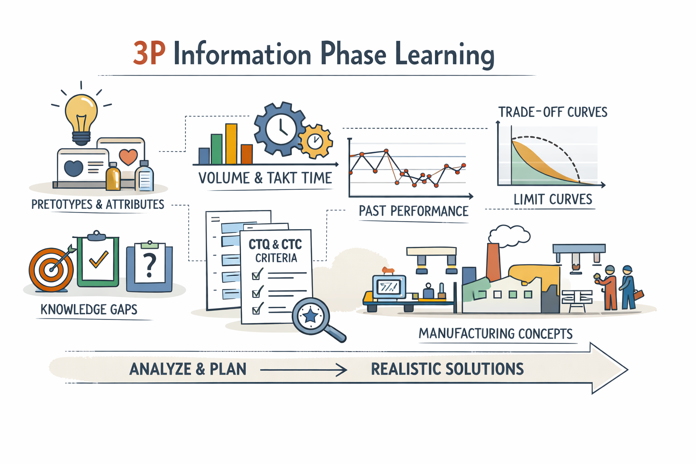
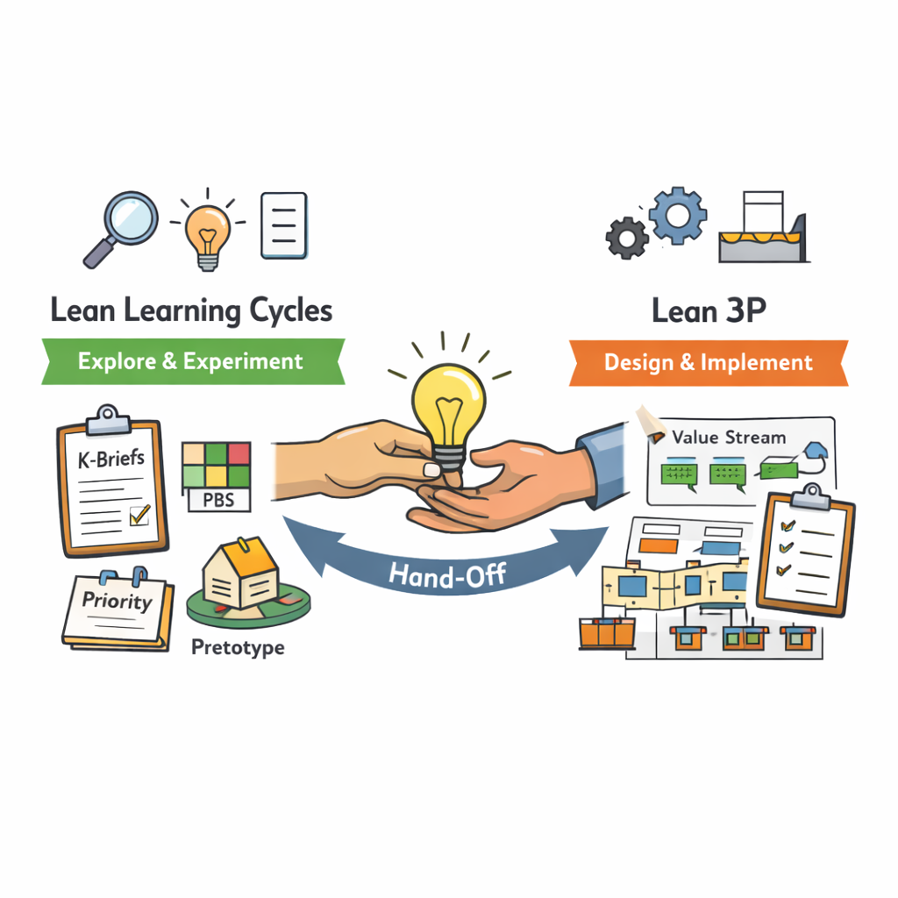

Section 23.1
Early Learning and the 3P Information Phase
The Information phase of Lean 3P is about understanding volume, takt, constraints, past performance, and rough manufacturing concepts before you redesign or build anything. If you already use Lean Learning Cycles, much of this information is not new work — it is the natural output of your early knowledge creation.

- Pretotypes and product attributes make customer intent and system structure visible, directly feeding into early manufacturing plans and CTQ/CTC thinking.
- Knowledge gaps and K Briefs from early cycles reveal where processes are likely to be risky or costly, guiding which areas deserve more attention in 3P.
- Visual knowledge like trade-off curves and limit curves show where physics or process limits sit, informing realistic takt, capacity, and equipment choices.
In other words, the Information phase of 3P can be seen as harvesting and structuring the knowledge you built during Lean Learning Cycles, then extending it with manufacturing-specific data.
Section 23.2
Innovation Phase as Focused Learning Cycles
The Innovation phase of 3P is where cross-functional teams generate and explore multiple alternatives for product and process — using tools like Quick-Look Value Engineering and the 7 Alternatives method. This is deeply aligned with the set-based, experiment-driven spirit of Lean Learning Cycles.
- The priority matrix and key decisions/knowledge gaps from Learning Cycles point to which functions, subsystems, or process steps deserve the most creative energy in Innovation.
- Innovation activities — like generating multiple process alternatives or simulating new layouts — can be structured as short learning cycles in their own right, with hypotheses, experiments, and K Briefs.
- 3P outputs (e.g., shortlisted process alternatives, early layout concepts, CTQ/CTC priorities) become new knowledge artefacts that feed back into your broader knowledge library.
“Seen this way, Innovation is not a separate world; it is a concentrated burst of learning cycles focused on product–process combinations.”
Section 23.3
Handing Over from Learning Cycles to 3P
The hand-over is not a rigid gate; it is a shift in emphasis from early product and system knowledge to designing and proving the operational value stream for the chosen concept.
Lean Learning Cycles
Focus: early product and system knowledge
Main artefacts: pretotypes, attributes, PBS, priority matrices, key decisions/gaps, K Briefs, trade-off and limit curves.
Lean 3P
Focus: designing and proving the operational value stream
Main artefacts: CTQ/CTC lists, value stream maps, 7 Alternatives matrices, layouts, PFEP, standard work, readiness checklists.

When early Learning Cycles have narrowed concepts and clarified key limits and trade-offs, you are ready to invest more energy in process and layout design. The Information phase of 3P uses early knowledge to set realistic boundaries. The Innovation phase runs its own focused learning cycles, now centred on process alternatives and product–process combinations.
For coaches and teams, this integrated view means you can frame 3P not as a separate method, but as the natural continuation of the learning journey that began with Lean Learning Cycles. The same habits — clear knowledge gaps, hypotheses, experiments, K Briefs, visual knowledge — work inside 3P events, making everything feel familiar rather than “another framework”.
“When Learning Cycles and 3P are used together, development feels less like a series of disconnected tools and more like one coherent system: learn early, decide wisely, industrialize robustly.”